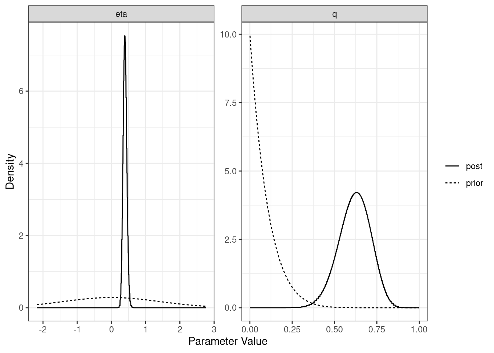
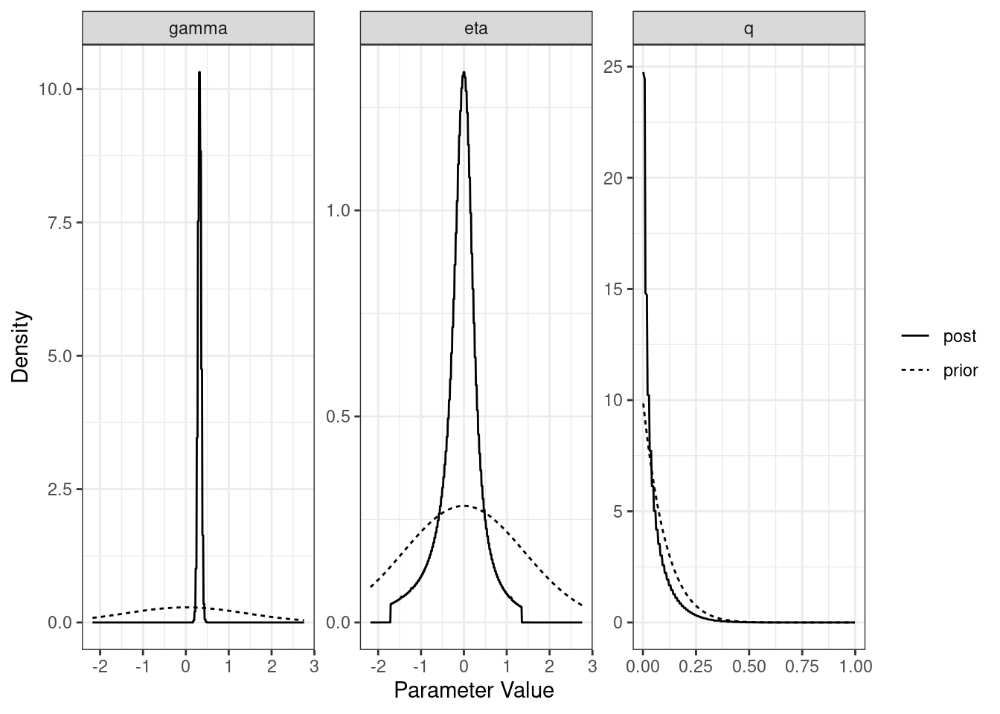
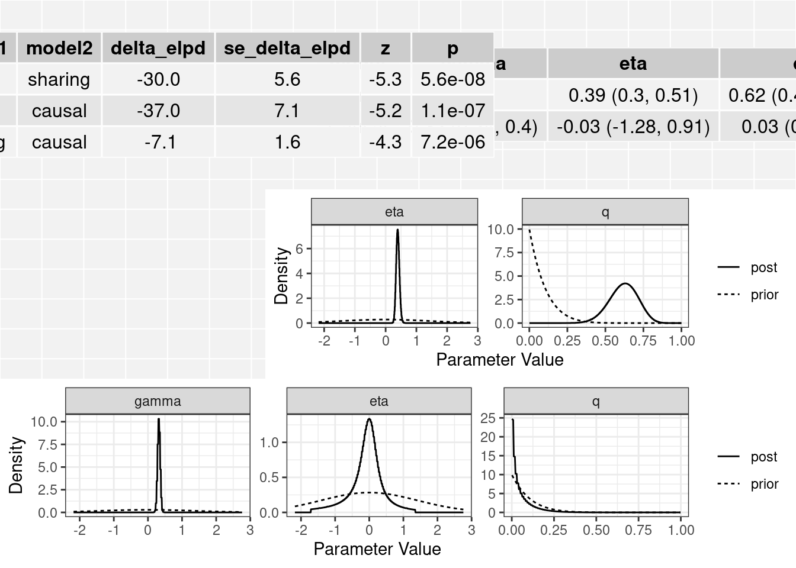
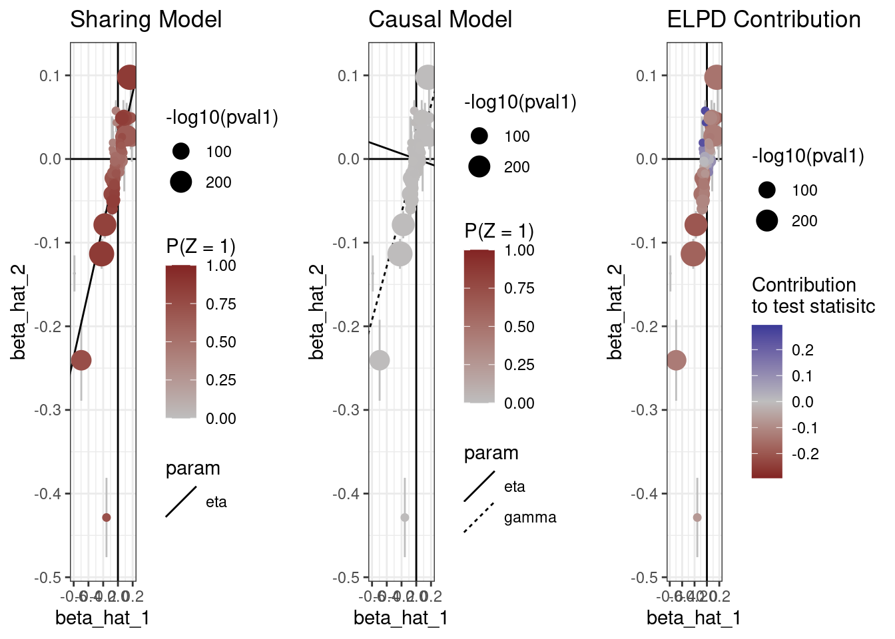

Last updated: 2021-11-29
Checks: 7 0
Knit directory: cause/
This reproducible R Markdown analysis was created with workflowr (version 1.6.2). The Checks tab describes the reproducibility checks that were applied when the results were created. The Past versions tab lists the development history.
Great! Since the R Markdown file has been committed to the Git repository, you know the exact version of the code that produced these results.
Great job! The global environment was empty. Objects defined in the global environment can affect the analysis in your R Markdown file in unknown ways. For reproduciblity it’s best to always run the code in an empty environment.
The command set.seed(20181014) was run prior to running the code in the R Markdown file. Setting a seed ensures that any results that rely on randomness, e.g. subsampling or permutations, are reproducible.
Great job! Recording the operating system, R version, and package versions is critical for reproducibility.
Nice! There were no cached chunks for this analysis, so you can be confident that you successfully produced the results during this run.
Great job! Using relative paths to the files within your workflowr project makes it easier to run your code on other machines.
Great! You are using Git for version control. Tracking code development and connecting the code version to the results is critical for reproducibility.
The results in this page were generated with repository version 7bdec64. See the Past versions tab to see a history of the changes made to the R Markdown and HTML files.
Note that you need to be careful to ensure that all relevant files for the analysis have been committed to Git prior to generating the results (you can use wflow_publish or wflow_git_commit). workflowr only checks the R Markdown file, but you know if there are other scripts or data files that it depends on. Below is the status of the Git repository when the results were generated:
Ignored files:
Ignored: .Rhistory
Ignored: .Rproj.user/
Ignored: ll_v7_notes.Rmd
Ignored: ll_v7_notes.html
Ignored: pipeline_code/ld/
Ignored: pipeline_code/plink_reference/
Ignored: pipeline_code/raw_data/
Ignored: sim_results/
Ignored: src/RcppExports.o
Ignored: src/cause.so
Ignored: src/log_likelihood_functions.o
Ignored: tests/
Untracked files:
Untracked: .Rhistory (tumble-track's conflicted copy 2021-07-15)
Untracked: cause.Rcheck/
Untracked: example_data/chr22_AF0.05_0.1.RDS
Untracked: example_data/chr22_AF0.05_snpdata.RDS
Untracked: example_data/ieu-b-38.vcf.gz
Untracked: example_data/ieu-b-38.vcf.gz.tbi
Untracked: example_data/ukb-b-9405.vcf.gz
Untracked: example_data/ukb-b-9405.vcf.gz.tbi
Unstaged changes:
Deleted: analysis/figure/simulations.Rmd/plot_fp-1.png
Deleted: analysis/figure/simulations.Rmd/roc-1.png
Deleted: analysis/figure/simulations.Rmd/unnamed-chunk-3-1.png
Deleted: analysis/figure/simulations.Rmd/unnamed-chunk-5-1.png
Deleted: analysis/figure/simulations.Rmd/unnamed-chunk-6-1.png
Modified: src/RcppExports.cpp
Note that any generated files, e.g. HTML, png, CSS, etc., are not included in this status report because it is ok for generated content to have uncommitted changes.
These are the previous versions of the repository in which changes were made to the R Markdown (analysis/ldl_cad.Rmd) and HTML (docs/ldl_cad.html) files. If you’ve configured a remote Git repository (see ?wflow_git_remote), click on the hyperlinks in the table below to view the files as they were in that past version.
| File | Version | Author | Date | Message |
|---|---|---|---|---|
| Rmd | 7bdec64 | Jean Morrison | 2021-11-29 | wflow_publish(files = c(“analysis/mrcieu.Rmd”, “analysis/ldl_cad.Rmd”)) |
| Rmd | d252cf6 | Jean Morrison | 2021-11-16 | spelling errors |
| html | 05b1882 | Jean Morrison | 2021-07-09 | Build site. |
| Rmd | 78949fc | Jean Morrison | 2021-07-08 | update tutorial |
| html | da5b784 | Jean Morrison | 2020-11-13 | Build site. |
| Rmd | c7a1cb4 | Jean Morrison | 2020-11-13 | refactor website |
| html | 81a1a48 | Jean Morrison | 2020-06-02 | Build site. |
| Rmd | f8dff24 | Jean Morrison | 2020-06-02 | wflow_publish(“analysis/ldl_cad.Rmd”) |
| html | 1cfcb0b | Jean Morrison | 2020-05-29 | Build site. |
| Rmd | 3c9571d | Jean Morrison | 2020-05-29 | wflow_publish(“analysis/ldl_cad.Rmd”) |
| html | 70e2b97 | Jean Morrison | 2019-12-04 | Build site. |
| Rmd | b1c1567 | Jean Morrison | 2019-08-07 | update vignette to use new formatting code |
| html | 1a90dd6 | Jean Morrison | 2019-07-15 | Build site. |
| Rmd | 02aa566 | Jean Morrison | 2019-07-15 | wflow_publish(“analysis/ldl_cad.Rmd”) |
| html | 1702acc | Jean Morrison | 2019-07-12 | Build site. |
| html | 02bc6d3 | Jean Morrison | 2019-07-09 | Build site. |
| Rmd | 28d211f | Jean Morrison | 2019-07-09 | wflow_publish(“analysis/ldl_cad.Rmd”) |
| html | bfa7d28 | Jean Morrison | 2019-07-09 | Build site. |
| Rmd | d8f89fc | Jean Morrison | 2019-07-09 | wflow_publish(“analysis/ldl_cad.Rmd”) |
| html | 3b5c7e2 | Jean Morrison | 2019-06-25 | Build site. |
| Rmd | a55827d | Jean Morrison | 2019-06-25 | wflow_publish(files = c(“analysis/index.Rmd”, “analysis/ldl_cad.Rmd”)) |
| html | d8d1486 | Jean Morrison | 2019-06-25 | Build site. |
| Rmd | e0a6df4 | Jean Morrison | 2019-06-25 | wflow_publish(files = c(“analysis/ldl_cad.Rmd”)) |
| html | 33b3732 | Jean Morrison | 2019-06-25 | Build site. |
| Rmd | 0e35268 | Jean Morrison | 2019-06-25 | wflow_publish(files = c(“analysis/ldl_cad.Rmd”)) |
| html | 286f4e9 | Jean Morrison | 2019-06-25 | Build site. |
| Rmd | 8f3b82e | Jean Morrison | 2019-06-25 | wflow_publish(files = c(“analysis/about.Rmd”, “analysis/index.Rmd”, “analysis/ldl_cad.Rmd”, “analysis/license.Rmd”, |
| html | 1753b22 | Jean Morrison | 2018-11-09 | update website |
| html | 2eb09d8 | Jean Morrison | 2018-11-06 | added new option for a truncated prior on q |
| html | 4a8f76c | Jean Morrison | 2018-11-06 | Build site. |
| Rmd | 2652be1 | Jean Morrison | 2018-11-06 | wflow_publish(“analysis/ldl_cad.Rmd”) |
| html | 6ae7a60 | Jean Morrison | 2018-10-24 | build website |
| Rmd | 48bdf21 | Jean Morrison | 2018-10-24 | fixing warnings |
| Rmd | 8c57c8a | Jean Morrison | 2018-10-24 | build website |
| html | 8c57c8a | Jean Morrison | 2018-10-24 | build website |
| Rmd | a34393d | Jean Morrison | 2018-10-24 | build website |
| html | a34393d | Jean Morrison | 2018-10-24 | build website |
| html | 6354c35 | Jean Morrison | 2018-10-22 | Build site. |
| Rmd | 24510f1 | Jean Morrison | 2018-10-22 | small language changes |
| Rmd | d050da8 | Jean Morrison | 2018-10-22 | wflow_publish(“analysis/ldl_cad.Rmd”) |
| html | bbe4901 | Jean Morrison | 2018-10-17 | Build site. |
| Rmd | 558cd32 | Jean Morrison | 2018-10-17 | wflow_publish(“analysis/ldl_cad.Rmd”) |
| html | 73690eb | Jean Morrison | 2018-10-17 | Build site. |
| Rmd | 1a891e3 | Jean Morrison | 2018-10-17 | wflow_publish(“analysis/ldl_cad.Rmd”) |
| Rmd | d10191f | Jean Morrison | 2018-10-17 | wflow_git_commit(“analysis/ldl_cad.Rmd”) |
This document will walk through a real genome-sized example of how to use CAUSE. Some of the steps will take 5-10 minutes. For steps that require long computation we also provide output files that can be downloaded to make it easier to run through the example.
We will be analyzing GWAS data for LDL cholesterol and for coronary artery disease to test for a causal relationship of LDL on CAD. The analysis will have the following steps:
There are two ways to do the LD pruning in step 3. The easiest way is to use Plink which is the method we use here. There are also built-in functions in the cause package that allow you to do LD pruning with pre-computed pairwise LD files. This could let you use an alternate LD calculation. The last section of this document shows how to do that using LD information estimated from the 1000 Genomes CEU population using LDshrink here. These data are about 11 Gb.
The GWAS data we will use are about 320 Gb. However, in this tutorial you will be able to skip the large data steps and simply download the results.
Follow installation instructions here
This section describes formatting for data that are available in a flat file. If you have vcf files downloaded from the IEU Open GWAS project see here for formatting instructions.
We will use read_tsv to read in summary statistics for a GWAS of LDL cholesterol and a GWAS of coronary artery disease from the internet. We will then combine these and format them for use with CAUSE. First read in the data. For LDL Cholesterol, we use summary statistics from Willer et al (2013) [PMID: 24097068]. For CAD we use summary statistics from van der Harst et al. (2017) [PMID: 29212778]. Downloading and formatting the data takes several minutes. If you want to skip this step, we provide a formatted data file that you can download below.
library(readr)
library(dplyr)
Attaching package: 'dplyr'The following objects are masked from 'package:stats':
filter, lagThe following objects are masked from 'package:base':
intersect, setdiff, setequal, unionlibrary(cause)X1 <- read_tsv("http://csg.sph.umich.edu/abecasis/public/lipids2013/jointGwasMc_LDL.txt.gz")Rows: 2437751 Columns: 10── Column specification ────────────────────────────────────────────────────────
Delimiter: "\t"
chr (5): SNP_hg18, SNP_hg19, rsid, A1, A2
dbl (5): beta, se, N, P-value, Freq.A1.1000G.EUR
ℹ Use `spec()` to retrieve the full column specification for this data.
ℹ Specify the column types or set `show_col_types = FALSE` to quiet this message.X2 <- read_tsv("ftp://ftp.ebi.ac.uk/pub/databases/gwas/summary_statistics/vanderHarstP_29212778_GCST005194/CAD_META.gz")Rows: 7947837 Columns: 18── Column specification ────────────────────────────────────────────────────────
Delimiter: "\t"
chr (5): MarkerName, Allele1, Allele2, Direction, oldID
dbl (13): Freq1, FreqSE, MinFreq, MaxFreq, Effect, StdErr, P-value, HetISq, ...
ℹ Use `spec()` to retrieve the full column specification for this data.
ℹ Specify the column types or set `show_col_types = FALSE` to quiet this message.CAUSE needs the following information from each data set: SNP or variant ID, effect size, and standard error, effect allele and other allele. We provide a simple function that will merge data sets and produce a cause_data object that can be used with later functions. This step and the rest of the analysis are done in R.
The function gwas_merge will merge two data sets and and align effect sizes to correspond to the same allele. It will remove variants with ambiguous alleles (G/C or A/T) or with alleles that do not match between data sets (e.g A/G in one data set and A/C in the other). It will also remove variants that are duplicated in either data set. It will not remove variants that are simply strand flipped between the two data sets (e. g. A/C in one data set, T/G in the other). If p-values are available it will accept those but they are not required. If p-values are missing, be default they will be computed using a normal approximation but this can be bypassed by setting compute_._pval = FALSE. p-values are only used in the LD pruning step.
LDL column headers:
CAD column headers:
If the p-value column in either data set is missing, the pval_cols argument can be omitted or one of the elements can be NA.
X <- gwas_merge(X1, X2, snp_name_cols = c("rsid", "oldID"),
beta_hat_cols = c("beta", "Effect"),
se_cols = c("se", "StdErr"),
A1_cols = c("A1", "Allele1"),
A2_cols = c("A2", "Allele2"),
pval_cols = c("P-value", "P-value"))Formatting X1
There are 2437751 variants.
Removing 794 duplicated variants leaving 2436956 variants.
Removing 1 variants with illegal alleles leaving 2436956 variants.
Removed 375645 variants with ambiguous strand.
Flipping strand and effect allele so A1 is always A
Returning 2061311 variants.
Formatting X2
There are 7947837 variants.
Removing 13 duplicated variants leaving 7947811 variants.
Removing 1 variants with illegal alleles leaving 7947811 variants.
Removed 1202723 variants with ambiguous strand.
Flipping strand and effect allele so A1 is always A
Returning 6745088 variants.
After merging and removing variants with inconsistent alleles, there are 2023354 variants that are present in both studies and can be used with CAUSE.Alternatively, you can download already formatted data here and read it in using readRDS.
system("mkdir example_data/")
download.file("https://github.com/jean997/cause/blob/master/example_data/LDL_CAD_merged.RDS", destfile = "example_data/LDL_CAD_merged.RDS")X <- readRDS("example_data/LDL_CAD_merged.RDS")head(X) snp beta_hat_1 seb1 p1 beta_hat_2 seb2 A1 A2 p2
1 rs4747841 0.0037 0.0052 0.71580 0.0106 0.0056 A G 0.0587000
2 rs4749917 -0.0033 0.0052 0.77480 -0.0108 0.0056 A G 0.0538200
3 rs737656 0.0099 0.0054 0.04000 0.0196 0.0058 A G 0.0007217
4 rs737657 0.0084 0.0054 0.08428 0.0195 0.0058 A G 0.0007519
5 rs7086391 -0.0075 0.0067 0.26890 0.0115 0.0072 A G 0.1088000
6 rs878177 -0.0073 0.0055 0.13760 -0.0225 0.0059 A G 0.0001398There are likely more efficient ways to do this merge. If you would like to process the data yourself, you can construct a cause_data object from a data frame using the constructor new_cause_data(X) where X is any data frame that includes the columns snp, beta_hat_1, seb1, beta_hat_2, and seb2.
The next step is to estimate the parameters that define the prior distribution of \(\beta_{M}\) and \(\theta\) and to estimate \(\rho\), the correlation between summary statistics that is due to sample overlap or population structure. We will do this with a random subset of 1,000,000 variants since our data set is large. est_cause_params estimates the nuisance parameters by finding the maximum a posteriori estimate of \(\rho\) and the mixing parameters when \(\gamma = \eta = 0\). This step takes a several minutes.
set.seed(100)
varlist <- with(X, sample(snp, size=1000000, replace=FALSE))
params <- est_cause_params(X, varlist)Estimating CAUSE parameters with 1000000 variants.
1 0.1233775
2 0.0005297492
3 6.181563e-06
4 4.140447e-08 The object params is of class cause_params and contains information about the fit as well as the maximum a posteriori estimates of the mixing parameters (\(\pi\)) and \(\rho\). The object params$mix_grid is a data frame defining the distribution of summary statistics. The column S1 is the variance for trait 1 (\(M\)), the column S2 is the variance for trait 2 (\(Y\)) and the column pi is the mixture proportion assigned to that variance combination.
class(params)[1] "cause_params"names(params)[1] "rho" "pi" "mix_grid" "loglik" "PIS" "RHO"
[7] "LLS" "converged" "prior" params$rho[1] 0.06465784head(params$mix_grid) S1 S2 pi
1 0.000000000 0.000000000 0.3105286679
2 0.000000000 0.003440730 0.2381082081
3 0.000000000 0.004865928 0.1490899384
4 0.003533615 0.004865928 0.1660234991
5 0.004997287 0.009731855 0.1177553305
6 0.019989147 0.009731855 0.0006521846In this case, we have estimated that 31% of variants have trait 1 variance and trait 2 equal to 0 meaning that they have no association with either trait.
Tip: Do not try to estimate the nuisance parameters with substantially fewer than 100,000 variants. This can lead to poor estimates of the mixing parameters whih leads to bad model comparisons.
If you don’t want to wait for this step, the parameters object can be downloaded from here using
download.file("https://github.com/jean997/cause/blob/master/example_data/LDL_CAD_params.RDS", destfile = "example_data/LDL_CAD_params.RDS")
params <- readRDS("example_data/LDL_CAD_params.RDS")We estimate CAUSE posterior distributions using an LD pruned set of variants, prioritizing variants with low trait \(M\) (LDL) \(p\)-values.
The easiest way is to use Plink to perform LD clumping. The ieugwasr package provides a convenient R interface to Plink. This method is fast but requires a reference sample which can be accessed through an API using ieugwasr::ld_clump (see help for that function). You can download also download reference data from here. That file will need to be unzipped.
An alternative is to use a built in function in the CAUSE R pacakge and precomputed pairwise estimates of \(r^2\). This is the method we used in our paper, coupled with LD estimates 1000 Genomes European samples computed via LDshrink. This method is slow but lets you use any LD estimates you want. We show how to do this in a section at the end of this document.
In either case, we prioritize variants based on their trait 1 p-value. We can limit ourselves to SNPs with trait 1 p-value less than 0.001 since we will use that threshold for estimating the CAUSE posteriors in the next step. If you use a higher threshold in the next step, you should also use a higher threshold in the pruning step. It is ok to have a lower threshold in the posterior estimation step than in the pruning step. In this case, the original GWAS data for LDL contains p-values se we use these. However, if these are missing you can compute approximate p-values using a normal approximation.
The following code performs LD pruning using the ieugwasr wrapper to Plink LD clumping function. If you have Plink already installed, you can replace the path in plink_bin with a path to your local installation. To use the code below, you will need the genetics.binaRies package which can be installed with devtools::install_github("explodecomputer/genetics.binaRies"). If you want to use local reference data, you can set the bfile option of ld_clump (see ?ld_clump).
r2_thresh = 0.01
pval_thresh = 1e-3
X_clump <- X %>%
rename(rsid = snp,
pval = p1) %>%
ieugwasr::ld_clump(dat = .,
clump_r2 = r2_thresh,
clump_p = pval_thresh,
plink_bin = genetics.binaRies::get_plink_binary(),
pop = "EUR")API: public: http://gwas-api.mrcieu.ac.uk/Please look at vignettes for options on running this locally if you need to run many instances of this command.Clumping Zieg5o, 2023354 variants, using EUR population referenceServer code: 502; Server is possibly experiencing traffic, trying again...Retry succeeded!Removing 2022635 of 2023354 variants due to LD with other variants or absence from LD reference paneltop_vars <- X_clump$rsidHere r2_thresh is the \(r^2\) threshold you would like to use and pval_thresh is the p-value threshold you will use to compute the CAUSE posteriors. We recommend using a lower \(r^2\) threshold for plink LD clumping than for LD clumping based on estimates from LDshrink, since these are not shrunken.
Now that we have formatted data, an LD pruned set of variants, and nuisance parameters estimated, we can fit CAUSE. The function cause estimates posterior distributions under the sharing and causal models and calculates the ELPD for both models as well as for the null model in which there is neither a causal or a shared factor effect. This might take 5-10 minutes.
res <- cause(X=X, variants = top_vars, param_ests = params)Estimating CAUSE posteriors using 719 variants.
Fitting confounder only model.
Setting Ranges
Refining Grid
Fitting causal model.
Setting Ranges
Refining GridOccasionally we see a warining about Pareto k diagnostics. This comes from the estimate of the elpd from the loo package. Usually we do not worry about it if there are few problematic samples for more details see help(‘pareto-k-diagnostic’). The loo objects are stored in a three element list res$loos. The first element is empty, the second element corresponds to the sharing model and the third element corresponds to the causal model. To print the Pareto k tables for the CAUSE models use
res$loos[[2]]
Computed from 1000 by 719 log-likelihood matrix
Estimate SE
elpd_loo 990.5 59.2
p_loo 0.7 0.1
looic -1981.0 118.5
------
Monte Carlo SE of elpd_loo is 0.0.
All Pareto k estimates are good (k < 0.5).
See help('pareto-k-diagnostic') for details.loo::pareto_k_table(res$loos[[2]])
All Pareto k estimates are good (k < 0.5).res$loos[[3]]
Computed from 1000 by 719 log-likelihood matrix
Estimate SE
elpd_loo 997.6 58.9
p_loo 0.6 0.0
looic -1995.2 117.8
------
Monte Carlo SE of elpd_loo is 0.0.
All Pareto k estimates are good (k < 0.5).
See help('pareto-k-diagnostic') for details.loo::pareto_k_table(res$loos[[3]])
All Pareto k estimates are good (k < 0.5).In some cases the problem can be resolved by fitting with more variants. If you are fitting with fewer than 1000 variants you could consider raising the p-value or \(r^2\) thresholds and verifying that both studies have genome-wide coverage.
The resulting cause object contains an object for the partial sharing model fit (sharing), and object for the causal model fit (causal) and a table of ELPD results.
class(res)[1] "cause"names(res)[1] "sharing" "causal" "elpd" "loos" "data" "sigma_g" "qalpha"
[8] "qbeta" res$elpd model1 model2 delta_elpd se_delta_elpd z
1 null sharing -29.660651 5.588301 -5.307633
2 null causal -36.735730 7.092086 -5.179821
3 sharing causal -7.075079 1.631256 -4.337198class(res$sharing)[1] "cause_post"class(res$causal)[1] "cause_post"The elpd table has the following columns:
In this case we see that the causal model is significantly better than the sharing model from the thrid line of the table. The \(z\)-score is -4.34 corresponding to a p-value of 7.2^{-6}.
For each model (partial sharing and full) we can plot the posterior distributions of the parameters. Dotted lines show the prior distributions.
plot(res$sharing)
| Version | Author | Date |
|---|---|---|
| 05b1882 | Jean Morrison | 2021-07-09 |
| 81a1a48 | Jean Morrison | 2020-06-02 |
| 70e2b97 | Jean Morrison | 2019-12-04 |
| bfa7d28 | Jean Morrison | 2019-07-09 |
| d8d1486 | Jean Morrison | 2019-06-25 |
| 33b3732 | Jean Morrison | 2019-06-25 |
| 286f4e9 | Jean Morrison | 2019-06-25 |
| 1753b22 | Jean Morrison | 2018-11-09 |
| 2eb09d8 | Jean Morrison | 2018-11-06 |
| 4a8f76c | Jean Morrison | 2018-11-06 |
| a34393d | Jean Morrison | 2018-10-24 |
| bbe4901 | Jean Morrison | 2018-10-17 |
| 73690eb | Jean Morrison | 2018-10-17 |
plot(res$causal)
| Version | Author | Date |
|---|---|---|
| 05b1882 | Jean Morrison | 2021-07-09 |
| 81a1a48 | Jean Morrison | 2020-06-02 |
| 70e2b97 | Jean Morrison | 2019-12-04 |
| bfa7d28 | Jean Morrison | 2019-07-09 |
| d8d1486 | Jean Morrison | 2019-06-25 |
| 33b3732 | Jean Morrison | 2019-06-25 |
| 286f4e9 | Jean Morrison | 2019-06-25 |
| 1753b22 | Jean Morrison | 2018-11-09 |
| 2eb09d8 | Jean Morrison | 2018-11-06 |
| 4a8f76c | Jean Morrison | 2018-11-06 |
| a34393d | Jean Morrison | 2018-10-24 |
| bbe4901 | Jean Morrison | 2018-10-17 |
| 73690eb | Jean Morrison | 2018-10-17 |
The summary method will summarize the posterior medians and credible intervals.
summary(res, ci_size=0.95)p-value testing that causal model is a better fit: 7.2e-06
Posterior medians and 95 % credible intervals:
model gamma eta q
[1,] "Sharing" NA "0.39 (0.3, 0.51)" "0.62 (0.43, 0.79)"
[2,] "Causal" "0.32 (0.24, 0.4)" "-0.03 (-1.28, 0.91)" "0.03 (0, 0.24)" The plot method applied to a cause object will arrange all of this information on one spread.
plot(res)
| Version | Author | Date |
|---|---|---|
| 05b1882 | Jean Morrison | 2021-07-09 |
| 81a1a48 | Jean Morrison | 2020-06-02 |
| 70e2b97 | Jean Morrison | 2019-12-04 |
| 1a90dd6 | Jean Morrison | 2019-07-15 |
| bfa7d28 | Jean Morrison | 2019-07-09 |
| d8d1486 | Jean Morrison | 2019-06-25 |
| 33b3732 | Jean Morrison | 2019-06-25 |
| 286f4e9 | Jean Morrison | 2019-06-25 |
| 1753b22 | Jean Morrison | 2018-11-09 |
| 2eb09d8 | Jean Morrison | 2018-11-06 |
| 4a8f76c | Jean Morrison | 2018-11-06 |
| a34393d | Jean Morrison | 2018-10-24 |
| bbe4901 | Jean Morrison | 2018-10-17 |
| 73690eb | Jean Morrison | 2018-10-17 |
The plot method can also produce scatter plots of the data showing for each model, the probability that each variant is acting through the shared factor and the contribution of each variant to the ELPD test statistic.
plot(res, type="data")
| Version | Author | Date |
|---|---|---|
| 05b1882 | Jean Morrison | 2021-07-09 |
| da5b784 | Jean Morrison | 2020-11-13 |
| 81a1a48 | Jean Morrison | 2020-06-02 |
| 1cfcb0b | Jean Morrison | 2020-05-29 |
| 70e2b97 | Jean Morrison | 2019-12-04 |
| 1a90dd6 | Jean Morrison | 2019-07-15 |
| bfa7d28 | Jean Morrison | 2019-07-09 |
| d8d1486 | Jean Morrison | 2019-06-25 |
| 33b3732 | Jean Morrison | 2019-06-25 |
| 286f4e9 | Jean Morrison | 2019-06-25 |
| 1cc4860 | Jean Morrison | 2018-11-09 |
| 2eb09d8 | Jean Morrison | 2018-11-06 |
| 4a8f76c | Jean Morrison | 2018-11-06 |
The function ld_prune uses a greedy algorithm that selects the variant with the lowest LDL p-value and removes all variants in LD with the selected variant and then repeats until no variants are left. This step requires LD estimates. You can download estimates made in the 1000 Genomes CEU population here. We first demonstrate use of the function for one chromosome and then show an example of how to parallelize the analysis over all 22 autosomes.
download.file("https://zenodo.org/record/1464357/files/chr22_AF0.05_0.1.RDS?download=1", destfile = "example_data/chr22_AF0.05_0.1.RDS")
download.file("https://zenodo.org/record/1464357/files/chr22_AF0.05_snpdata.RDS?download=1", destfile="example_data/chr22_AF0.05_snpdata.RDS")ld <- readRDS("example_data/chr22_AF0.05_0.1.RDS")
snp_info <- readRDS("example_data/chr22_AF0.05_snpdata.RDS")
head(ld) rowsnp colsnp r2
1 rs62224609 rs376238049 0.9012642
2 rs62224609 rs62224614 0.9907366
3 rs62224609 rs7286962 0.9907366
4 rs62224609 rs55926024 0.1103000
5 rs62224609 rs117246541 0.9012642
6 rs62224609 rs62224618 0.9907366head(snp_info)# A tibble: 6 × 9
AF SNP allele chr pos snp_id region_id map ld_snp_id
<dbl> <chr> <chr> <int> <int> <int> <int> <dbl> <int>
1 0.884 rs62224609 T,C 22 16051249 79758556 22 0 79758556
2 0.904 rs4965031 G,A 22 16052080 79758578 22 0 79758578
3 0.646 rs375684679 A,AAAAC 22 16052167 79758584 22 0 79758584
4 0.894 rs376238049 C,T 22 16052962 79758602 22 0 79758602
5 0.934 rs200777521 C,A 22 16052986 79758604 22 0 79758604
6 0.934 rs80167676 A,T 22 16053444 79758627 22 0 79758627The ld data frame should contain the column names rowsnp, colsnp, and r2. The snp_info data frame contains information about all of the chromosome 22 variants with allele frequency greater than 0.05. The only piece of information we need from this data frame is the list of variants snp_info$SNP which provides the total list of variants used in the LD calculations.
The ld_prune function is somewhat flexible in its arguments, see help(ld_prune).
variants <- X %>% mutate(pval1 = 2*pnorm(abs(beta_hat_1/seb1), lower.tail=FALSE))
pruned <- ld_prune(variants = variants,
ld = ld, total_ld_variants = snp_info$SNP,
pval_cols = c("pval1"),
pval_thresh = c(1e-3))
length(pruned)If length(pval_cols) =1, ld_prune returns a vector of selected variants. If There are multipld \(p\)-value columns provided, ld_prune will return a list of vectors, one for each column. The length of pval_thresh should be equal to the length of pval_cols and provides a threshold for each column. Excluding variants with high \(p\)-values speeds up the pruning step. We can fit CAUSE without high \(p\)-value variants because these variants have almost no influence on the posterior distributions or the ELPD test statistic. The exact value of the threshold isn’t important as long as it is fairly lenient. Including additional variants may slow down computation but shouldn’t change the results
We highly recommend parallelizing for whole genome LD pruning. One way to do this is with the parallel pacakge, though this option uses a lot of memory. A better option is to submit separate jobs to nodes of a compute cluster and then combine results.
If you are analyzing many phenotypes, the most efficient way to complete this step is to first obtain a list of variants present in all data sets and use only these variants in your analysis. You can then obtain an LD-pruned set of variants prioritized for low \(p\)-values for each traits (\(N\) lists if there are \(N\) phenotypes). In any analysis, you will use the list of variants prioritized for the trait \(M\) phenotype.
Download the LD-pruned variant list for our example analysis: top LDL list
download.file("https://github.com/jean997/cause/blob/master/example_data/top_ldl_pruned_vars.RDS", destfile = "example_data/top_ldl_pruned_vars.RDS")sessionInfo()R version 4.1.1 (2021-08-10)
Platform: x86_64-pc-linux-gnu (64-bit)
Running under: Ubuntu 20.04.3 LTS
Matrix products: default
BLAS: /usr/lib/x86_64-linux-gnu/openblas-pthread/libblas.so.3
LAPACK: /usr/lib/x86_64-linux-gnu/openblas-pthread/liblapack.so.3
locale:
[1] LC_CTYPE=en_US.UTF-8 LC_NUMERIC=C
[3] LC_TIME=en_US.UTF-8 LC_COLLATE=en_US.UTF-8
[5] LC_MONETARY=en_US.UTF-8 LC_MESSAGES=en_US.UTF-8
[7] LC_PAPER=en_US.UTF-8 LC_NAME=C
[9] LC_ADDRESS=C LC_TELEPHONE=C
[11] LC_MEASUREMENT=en_US.UTF-8 LC_IDENTIFICATION=C
attached base packages:
[1] stats graphics grDevices utils datasets methods base
other attached packages:
[1] cause_1.2.0.0327 dplyr_1.0.7 readr_2.0.2 workflowr_1.6.2
loaded via a namespace (and not attached):
[1] Rcpp_1.0.7 invgamma_1.1 lattice_0.20-44 tidyr_1.1.3
[5] assertthat_0.2.1 rprojroot_2.0.2 digest_0.6.28 utf8_1.2.2
[9] truncnorm_1.0-8 R6_2.5.1 evaluate_0.14 highr_0.9
[13] httr_1.4.2 ggplot2_3.3.5 pillar_1.6.4 rlang_0.4.12
[17] curl_4.3.2 rstudioapi_0.13 irlba_2.3.3 whisker_0.4
[21] Matrix_1.3-4 rmarkdown_2.9 labeling_0.4.2 stringr_1.4.0
[25] loo_2.4.1 bit_4.0.4 munsell_0.5.0 mixsqp_0.3-43
[29] compiler_4.1.1 httpuv_1.6.1 xfun_0.24 pkgconfig_2.0.3
[33] SQUAREM_2021.1 ieugwasr_0.1.5 htmltools_0.5.2 tidyselect_1.1.1
[37] tibble_3.1.5 gridExtra_2.3 intervals_0.15.2 matrixStats_0.60.0
[41] fansi_0.5.0 crayon_1.4.1 tzdb_0.1.2 later_1.3.0
[45] grid_4.1.1 jsonlite_1.7.2 gtable_0.3.0 lifecycle_1.0.1
[49] DBI_1.1.1 git2r_0.28.0 magrittr_2.0.1 scales_1.1.1
[53] RcppParallel_5.1.4 cli_3.0.1 stringi_1.7.5 vroom_1.5.5
[57] farver_2.1.0 fs_1.5.0 promises_1.2.0.1 ellipsis_0.3.2
[61] generics_0.1.0 vctrs_0.3.8 tools_4.1.1 bit64_4.0.5
[65] glue_1.4.2 purrr_0.3.4 hms_1.1.1 parallel_4.1.1
[69] fastmap_1.1.0 yaml_2.2.1 colorspace_2.0-2 ashr_2.2-47
[73] knitr_1.33
sessionInfo()R version 4.1.1 (2021-08-10)
Platform: x86_64-pc-linux-gnu (64-bit)
Running under: Ubuntu 20.04.3 LTS
Matrix products: default
BLAS: /usr/lib/x86_64-linux-gnu/openblas-pthread/libblas.so.3
LAPACK: /usr/lib/x86_64-linux-gnu/openblas-pthread/liblapack.so.3
locale:
[1] LC_CTYPE=en_US.UTF-8 LC_NUMERIC=C
[3] LC_TIME=en_US.UTF-8 LC_COLLATE=en_US.UTF-8
[5] LC_MONETARY=en_US.UTF-8 LC_MESSAGES=en_US.UTF-8
[7] LC_PAPER=en_US.UTF-8 LC_NAME=C
[9] LC_ADDRESS=C LC_TELEPHONE=C
[11] LC_MEASUREMENT=en_US.UTF-8 LC_IDENTIFICATION=C
attached base packages:
[1] stats graphics grDevices utils datasets methods base
other attached packages:
[1] cause_1.2.0.0327 dplyr_1.0.7 readr_2.0.2 workflowr_1.6.2
loaded via a namespace (and not attached):
[1] Rcpp_1.0.7 invgamma_1.1 lattice_0.20-44 tidyr_1.1.3
[5] assertthat_0.2.1 rprojroot_2.0.2 digest_0.6.28 utf8_1.2.2
[9] truncnorm_1.0-8 R6_2.5.1 evaluate_0.14 highr_0.9
[13] httr_1.4.2 ggplot2_3.3.5 pillar_1.6.4 rlang_0.4.12
[17] curl_4.3.2 rstudioapi_0.13 irlba_2.3.3 whisker_0.4
[21] Matrix_1.3-4 rmarkdown_2.9 labeling_0.4.2 stringr_1.4.0
[25] loo_2.4.1 bit_4.0.4 munsell_0.5.0 mixsqp_0.3-43
[29] compiler_4.1.1 httpuv_1.6.1 xfun_0.24 pkgconfig_2.0.3
[33] SQUAREM_2021.1 ieugwasr_0.1.5 htmltools_0.5.2 tidyselect_1.1.1
[37] tibble_3.1.5 gridExtra_2.3 intervals_0.15.2 matrixStats_0.60.0
[41] fansi_0.5.0 crayon_1.4.1 tzdb_0.1.2 later_1.3.0
[45] grid_4.1.1 jsonlite_1.7.2 gtable_0.3.0 lifecycle_1.0.1
[49] DBI_1.1.1 git2r_0.28.0 magrittr_2.0.1 scales_1.1.1
[53] RcppParallel_5.1.4 cli_3.0.1 stringi_1.7.5 vroom_1.5.5
[57] farver_2.1.0 fs_1.5.0 promises_1.2.0.1 ellipsis_0.3.2
[61] generics_0.1.0 vctrs_0.3.8 tools_4.1.1 bit64_4.0.5
[65] glue_1.4.2 purrr_0.3.4 hms_1.1.1 parallel_4.1.1
[69] fastmap_1.1.0 yaml_2.2.1 colorspace_2.0-2 ashr_2.2-47
[73] knitr_1.33